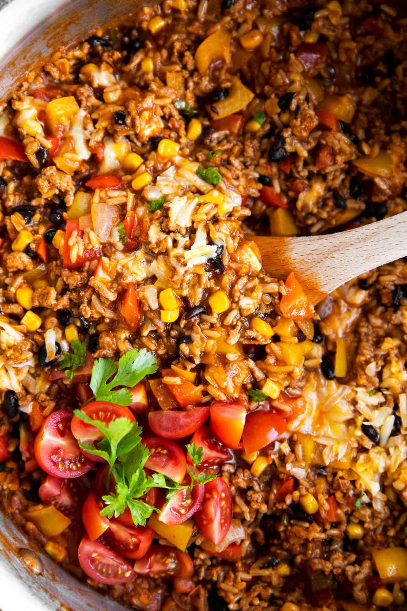

recipe
- Cook the beef in a skillet. Next saulté onions in olive oil till it's golden, next let the beef brown then stir for more flavor.
- Stir in some taco seasoning and enchilada sauce. Let it simmer until it is thick. Scrape the pan with sauce to add some more flavor into the mix.
- Cook cilantro-lime rice then let the rice sit in the heat after cooking for a fluffy texture.
- Spread rice beef, refried beans and cheese around and evenly around the tortilla make sure not to add too many ingredients so it can close and so it can roll easily.
- Roll the burrito tightly so it does not fall apart, make sure to roll it on a greasy sheet and bake it till it is crisp put light oil spray before cooling the burrito
- Serve and allow the burrito recipe to cool then apply your toppings of choice
